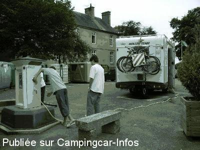

ASN = Aire de services avec stationnement nuit possible de :
MORTAIN
(N° 358)
Accès/adresse :
Place du Château
50140 MORTAIN
50140 MORTAIN
Latitude : (Nord) 48.64876° Décimaux ou 48° 38′ 55′′
Longitude : (Ouest) -0.945° Décimaux ou 0° 56′ 41′′
Tarif : Gratuit
Type de borne : EURO-RELAIS
Services :


Autres informations :
Ouvert toute l'année
10 emplacements
Stationnement limité 48 h
Tél +33 (0)233 793 030
Le 21/08/2006 par christian37_59

Le 21/08/2006 par christian37_59
Le 20/08/2003 par JohnL

Le 16/08/2003 par bruno81
Le 16/08/2003 par bruno81
de
dom.ds
le 21/03/2016 :
dom nous sommes passé le 20/03/2016 tres bien et calme
ne pas oublier de passer au restaurant "LA TABLE DE SAINT VITAL " super accueil et repas au top
dom nous sommes passé le 20/03/2016 tres bien et calme
ne pas oublier de passer au restaurant "LA TABLE DE SAINT VITAL " super accueil et repas au top
de
COALA5435
le 15/09/2015 :
Nous avons passé la nuit sur cette aire le 12/9/2015. C'est très calme. Endroit judicieux pour un départ du circuit des cascades. Ne pas manquer de monter à la chapelle St Michel et à la côte 314 qui est à coté. Très bon accueil à l'office du tourisme. C'est à signaler.
Nous avons passé la nuit sur cette aire le 12/9/2015. C'est très calme. Endroit judicieux pour un départ du circuit des cascades. Ne pas manquer de monter à la chapelle St Michel et à la côte 314 qui est à coté. Très bon accueil à l'office du tourisme. C'est à signaler.
de
Jackson 50
le 24/08/2014 :
aire très calme plusieurs camping car sur un autre emplacement parce que nous étions une bonne dizaine mais la très bonne surprise est arrivée le mercredi soir vers à peine 7 heures trois bénévoles de l'office du tourisme offre l'été quand il fait beau une dégustation gratuite soit : du poiré, jus de pomme ou cidre bouché mais il n'y a pas de vente. Depuis 5 ans et demi que nous faisons du camping car, première fois que cela nous arrive, si non les cascades sont belles à visiter ainsi que l'abbaye et les chapelles, très bonne accueil à l'office du tourisme
aire très calme plusieurs camping car sur un autre emplacement parce que nous étions une bonne dizaine mais la très bonne surprise est arrivée le mercredi soir vers à peine 7 heures trois bénévoles de l'office du tourisme offre l'été quand il fait beau une dégustation gratuite soit : du poiré, jus de pomme ou cidre bouché mais il n'y a pas de vente. Depuis 5 ans et demi que nous faisons du camping car, première fois que cela nous arrive, si non les cascades sont belles à visiter ainsi que l'abbaye et les chapelles, très bonne accueil à l'office du tourisme
de
bopa76
le 11/11/2013 :
11/11/2013
exact: aire calme service gratuit,toilettes propres grands emplacements pres du centre et ballade vers deux cascades ;que demander de plus
11/11/2013
exact: aire calme service gratuit,toilettes propres grands emplacements pres du centre et ballade vers deux cascades ;que demander de plus
de
maryline lucas
le 20/05/2012 :
aire très calme avec services gratuits, malheureusement nous n'avons visiter la ville pour cause de mauvais temmps mais nous reviendrons
aire très calme avec services gratuits, malheureusement nous n'avons visiter la ville pour cause de mauvais temmps mais nous reviendrons
de
ZOE
le 17/03/2012 :
Nuit calme à Mortain que nous connaissions déjà. Le lendemain midi, trois voitures stationnent sur les emplacements... surtout ne pas faire 10m à pied pour les bancs de pique-nique. La propriétaire de la voiture à côté de nous se permet de mettre sa radio à fond... que dire !! devant tant d'incivilité. Ballade pour la grande cascade et l'abbaye blanche.Commerces à 2 minutes.
Nuit calme à Mortain que nous connaissions déjà. Le lendemain midi, trois voitures stationnent sur les emplacements... surtout ne pas faire 10m à pied pour les bancs de pique-nique. La propriétaire de la voiture à côté de nous se permet de mettre sa radio à fond... que dire !! devant tant d'incivilité. Ballade pour la grande cascade et l'abbaye blanche.Commerces à 2 minutes.
de
le Glaude
le 14/06/2011 :
Grande place en contrebas de Mortain.
lorsque nous y sommes passés (juin 2011), l'unique prise électrique ne fonctionnait pas. Tant pis.
Les premiers commerces sont à une minute à pied
Nuit calme.
Je vous recommande la visite des cascades. Un petit chemin, à gauche du "château", vous y ménera
Ma note: 12/20
Grande place en contrebas de Mortain.
lorsque nous y sommes passés (juin 2011), l'unique prise électrique ne fonctionnait pas. Tant pis.
Les premiers commerces sont à une minute à pied
Nuit calme.
Je vous recommande la visite des cascades. Un petit chemin, à gauche du "château", vous y ménera
Ma note: 12/20
de
Michel et Dominique
le 16/05/2011 :
Petite ville sympa avec tout commerces
en haut du cimetière on a une vue sur le mont Saint-Michel distance 40 Km
à voir absolument la grande et la petite cascade
magnifique circuit
Petite ville sympa avec tout commerces
en haut du cimetière on a une vue sur le mont Saint-Michel distance 40 Km
à voir absolument la grande et la petite cascade
magnifique circuit
de
Sébi
le 20/04/2009 :
Sympa!!!
Sauf quand les cascadeurs ont investis les lieux, avec départ a 6h30 le matin en klaxonnant!!!!
On peut aussi stationner à la petite chapelle.
Sympa!!!
Sauf quand les cascadeurs ont investis les lieux, avec départ a 6h30 le matin en klaxonnant!!!!
On peut aussi stationner à la petite chapelle.
de
Mimi et Jeanpipi
le 23/06/2008 :
Aire impeccable et les WC publiques sont trés propres, a faire la randonnéee de la petite et grande cascade
Aire impeccable et les WC publiques sont trés propres, a faire la randonnéee de la petite et grande cascade
de
Christian37_59
le 21/08/2006 :
Lorsque nous y sommes passés le 31/07/2006 il n'y avait pas 220v à la borne. Les autres servces sont ok
Lorsque nous y sommes passés le 31/07/2006 il n'y avait pas 220v à la borne. Les autres servces sont ok
de
lessard
le 06/05/2006 :
Pour une étape agréable au calme... Belles balades à faire, commerces proches... A recommander
Pour une étape agréable au calme... Belles balades à faire, commerces proches... A recommander